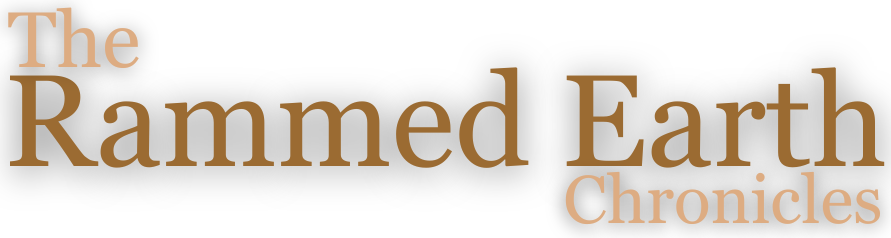

Build Your Foundation
Your willingness matters—now develop the experience
I can see from your responses that you have genuine interest and willingness to learn. That's valuable. What you don't yet have is the hands-on experience and technical foundation that makes tech transfer productive. The good news: both can be built systematically.
The Honest Assessment
Your responses suggest you're at the beginning of your journey with rammed earth. You may be:
- A professional in a related field exploring whether to add rammed earth to your services
- Someone with strong conceptual interest but limited hands-on experience with earthen materials
- Unclear about the specific technical knowledge you need because you haven't encountered the problems yet
- Still figuring out how this fits your professional practice
None of this means you can't get there. It means you're not there yet.
"Willingness is the foundation. Experience builds on that foundation. Technical knowledge builds on experience. Right now, you have the foundation but need the middle layer before the top layer makes sense."
What Tech Transfer Requires
To give you a clear picture of what you're working toward:
Tech Transfer Prerequisites
- Direct hands-on experience building with earth (not just watching or reading)
- Understanding of soil behavior through actual material work
- Specific technical questions born from encountering real problems
- Clear professional context for how you'll apply the knowledge
- Commitment to sustained learning over months, not quick answers
- Organizational support (if applicable) for building this capability
Without these, tech transfer becomes theoretical instruction that doesn't stick. With them, it becomes powerful capability building.
Your Path Forward
Here's a realistic pathway from where you are to being ready for tech transfer:
Three-Phase Foundation Building
Phase 1: Direct Material Experience (3-6 months)
Goal: Develop tactile understanding of earth as a building material
Actions:
- Build small test structures—garden walls, benches, sculptural elements
- Work with different soil types and moisture contents
- Experience the full cycle: mixing, forming, compacting, curing, observing
- Make mistakes and document what fails and why
- Develop intuition for "right" consistency, compaction, and moisture
Outcome: You understand earth's behavior at a felt level, not just intellectually
Phase 2: Technical Understanding (2-4 months)
Goal: Build knowledge of principles, methods, and standards
Actions:
- Study soil science—particle sizes, plasticity, compaction principles
- Learn soil testing methods and conduct tests on various soils
- Research structural considerations and building code requirements
- Read technical literature with your hands-on experience as context
- Visit existing rammed earth buildings and analyze their construction
Outcome: You can ask informed technical questions and understand the answers
Phase 3: Professional Application (1-3 months)
Goal: Clarify how rammed earth fits your practice
Actions:
- Determine if this is a core service or occasional specialty
- Identify specific technical gaps between your knowledge and what you need
- Consider organizational requirements (team training, equipment, insurance)
- Develop realistic timeline for capability building
- Connect with other professionals through the directory
Outcome: You know exactly what you need from tech transfer and how you'll use it
Workshops: Your Best Starting Point
For professionals at your stage, a workshop is the most efficient way to build your foundation. Here's why:
What a Workshop Provides
- Intensive hands-on experience with expert guidance
- Correction of misconceptions before they become ingrained habits
- Technical knowledge delivered in context of actual building
- Community of peers at similar stages
- Clear sense of whether this path is right for you
- Foundation for future self-directed learning
After a workshop, you'll be in a much stronger position to:
- Continue building experience with better technique
- Know what questions to ask and where to focus learning
- Decide if tech transfer is your next step or if project consultation is more appropriate
Accelerate your learning with structured, hands-on instruction.
Self-Directed Learning Path
If workshops aren't available or don't fit your timeline, you can build foundation independently. It takes longer and requires more discipline, but it's possible.
Essential Reading
- "The Rammed Earth House" by David Easton (start here)
- "Building with Earth" by Gernot Minke (comprehensive)
- "The Hand-Sculpted House" by Ianto Evans (for understanding material relationships)
- Australian Earth Building Handbook (HB 195) for modern standards
Practical Learning
- Build something small every week for 3 months—consistency matters more than scale
- Document everything: successes, failures, observations, questions
- Work with local soil—learn YOUR material conditions
- Find existing rammed earth structures and study them in person
- Connect with experienced builders through the directory
Technical Foundation
- Learn basic soil testing—jar test, ribbon test, ball drop test
- Study compaction principles and experiment with different methods
- Research moisture management and curing processes
- Understand formwork design through building and iterating
Alternative Path: Personal Consultation
If your interest is more personal than professional—perhaps you want to build something for yourself rather than offer it as a service—the consultation path might be more appropriate than tech transfer.
Consultation is better if you:
- Have a specific personal project in mind
- Want guidance for your own building process
- Aren't building professional capability for ongoing service
- Need project-specific support more than comprehensive knowledge
Tech transfer is better if you:
- Want to add rammed earth as a professional service
- Need deep technical knowledge for multiple future projects
- Are building organizational capability
- Want to become independently competent, not just complete one project
"The professionals who eventually become most skilled are often those who took the time to build a solid foundation. Don't rush this phase. The capability you're building now will serve you for decades."
When You're Ready
After 6-12 months of focused foundation building, reassess where you are. If you've done the work, you'll likely be ready for tech transfer. You'll know you're ready when:
- You've built multiple structures and learned from their successes and failures
- You understand soil behavior at an intuitive level from hands-on work
- You have specific, informed technical questions born from real experience
- You're clear about how rammed earth fits your professional practice
- You're committed to sustained learning, not just acquiring quick knowledge
At that point, reach out again through the tech transfer inquiry. Your experience will make the conversation—and the subsequent knowledge transfer—far more productive.
Stay Connected
As you build your foundation:
- Follow The Rammed Earth Chronicles for technical insights
- Join the community through the Q&A section
- Document your learning journey—it becomes your knowledge base
- When you're ready, return for tech transfer with experience under your belt
About This Assessment
Your responses were analyzed by an algorithm that looks for indicators of hands-on experience, technical knowledge, and professional readiness. It placed you in the "willing beginner professional" category.
Here's what that means: You have willingness, which is essential. What you need now is experience and technical foundation. That's not a criticism—everyone starts somewhere. The most successful professionals are often those who built their foundation patiently and thoroughly.
If you feel the assessment misunderstood your situation or you have more experience than came through in your responses, reach out directly and we'll have a real conversation.